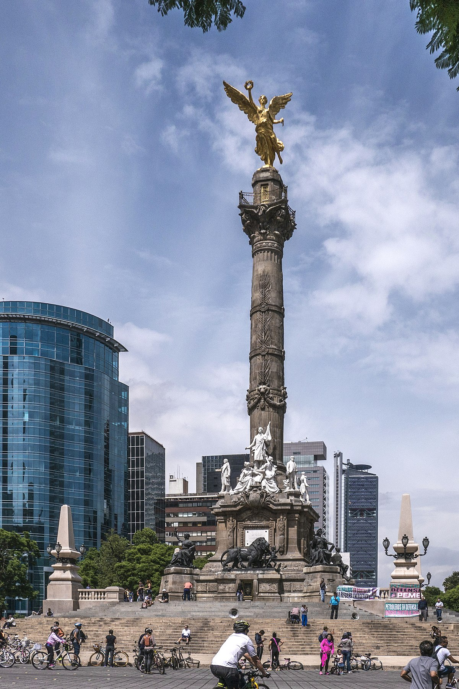
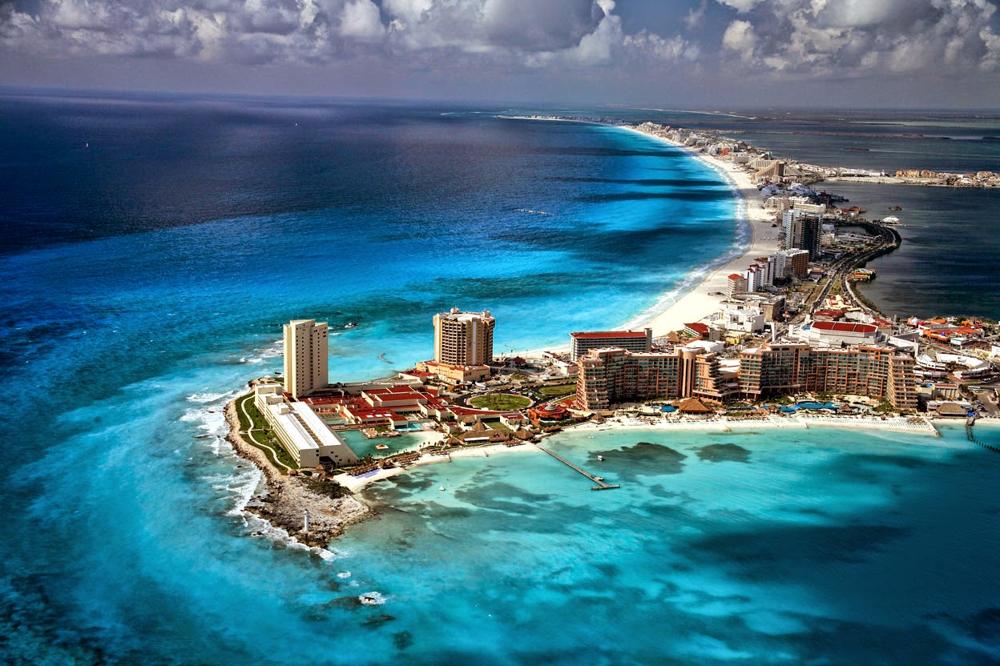
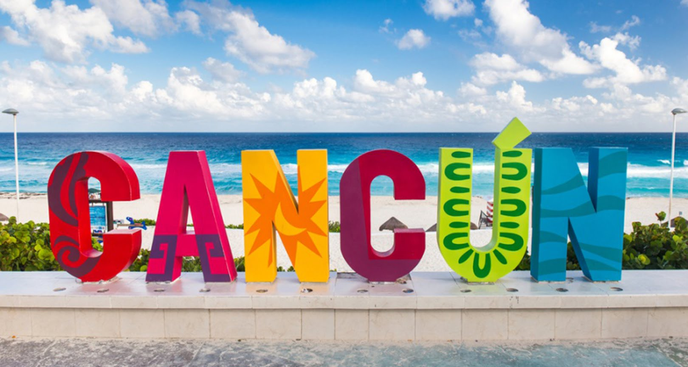
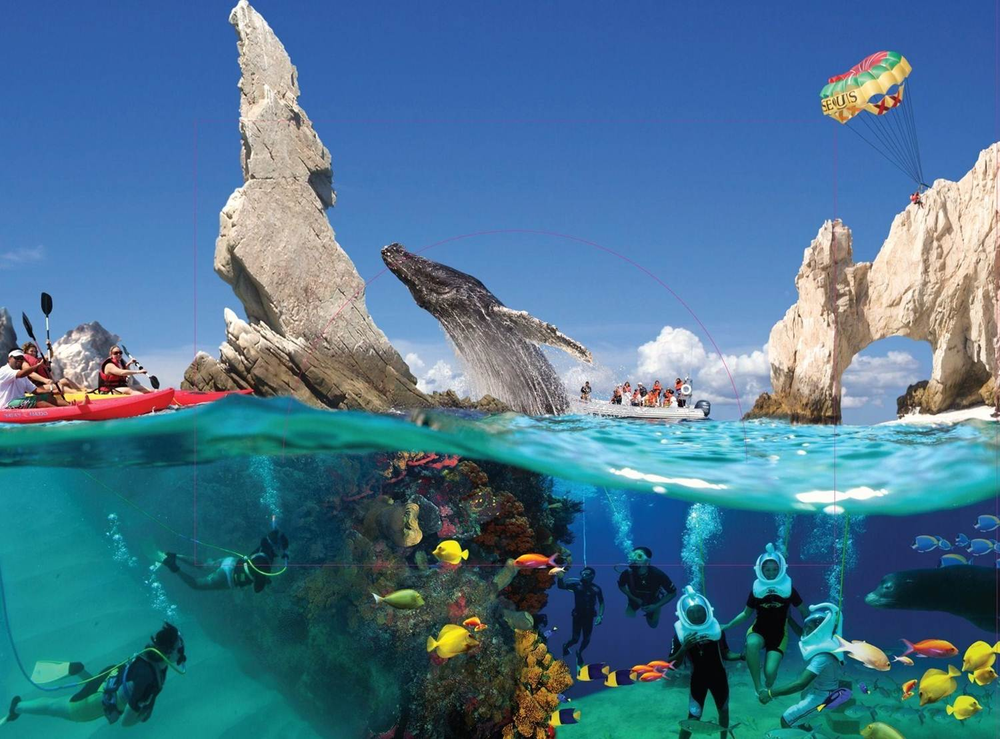

Alrededor de este impresionantes y bellísimo cenote se ha elaborado todo un eco-parque, en el que destacan, además de su exuberante floresta y muchas aves, la posibilidad de pernoctar en alguna de sus cabañitas de alto standing, al más puro estilo maya, pero con jacuzzi. No faltan restaurantes y comercios donde comprar recuerdos. El cenote Ik Kil es uno de los lugares más espectaculares de Yucatán a tan solo 3 kilómetros de Chichén Itzá. No debes perdértelo.
En el mundo de los viajes me conocen como Aristofennes; siendo este nombre el que utilizo en el blog. Soy el blogger de viajes autor de Blogtrip, un humilde espacio personal de relatos viajeros. Nací en la ciudad caribeña de Santa Marta Colombia y me crié a punto de arroz con coco, pescado frito y música tropical. Resido en Francia y poseo la doble nacionalidad franco-colombiana. Pero me considero un ciudadano del mundo. Por cosas del destino, mi infancia y mi adolescencia la pasé viajando por toda Colombia con mi familia. Yo pienso de ahí nació ese deseo de ser nómada moderno y de estar en constante movimiento.